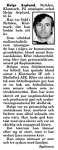

Helge Gunnar Sixten Asplund
Mellanstadielärere , gymnasielärare, författare. Blev 51 år.
| Född: | 1946-09-07 Ö. Nyliden, Skellefteå lfs, Skellefteå sn. [1] | |
|---|
| Död: | 1998-07-12 Nyliden 24, Klutmark, Skellefteå lfs, Skellefteå kn. [2] | Ogift man. |
|---|
Noteringar
Bertil Asplund har sammanställt ett intressant material, som lyfter fram sin egen pedagogiska utveckling och skrivande och sin kreative framlidne bror Helges insatser.
Dokumentet heter: ..\_pdf-docs\bertil_helge_asplund.pdf 2018-04-20
Helge Asplund skrev efter sin aktiva tid osm fotbollssperlare ut en bok om fotbollsfinter. Utifrån den togs en instruktionsviedo fram.
Han har även skrivit ett par ungdomsböcker och producerat spel- och undervisningsmaterial för skolbruk.
Personhistoria
| Årtal | Ålder | Händelse |
|---|
| 1946 |
|
Födelse 1946-09-07 Ö. Nyliden, Skellefteå lfs, Skellefteå sn [1] |
| 1948 |
1 år |
Brodern Alf Bertil Johannes Asplund föds 1948-06-30 Ö. Nyliden, Skellefteå lfs, Skellefteå sn [1] |
| 1955 |
8 år |
Brodern Nils Anders Åke Asplund föds 1955-04-28 Ö. Nyliden, Skellefteå lfs, Skellefteå sn [1] |
| 1977 |
31 år |
Fadern Johan Gunberg (Gunnar) Asplund dör 1977-11-22 Ö. Nyliden, Skellefteå lfs, Skellefteå kn [3] |
| 1998 |
51 år |
Död 1998-07-12 Nyliden 24, Klutmark, Skellefteå lfs, Skellefteå kn [2] |
Dokument
Källor
| [1] | Mtl Västerbottens län 1971 |
| |
| | |
| [2] | RTB 98 / SPAR 92f |
| |
| | |
| [3] | RTB 77 / SPAR 80 |
| |
|
|
| 1974. Helge Asplund |
| |
|  |
1998-07-14. Helge Asplund
In memoriam
Norran 1998-07-14
|
|
{kind=link}
{kind=link}